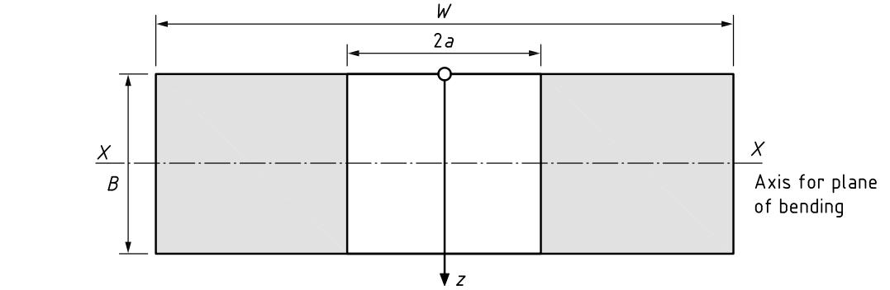

Fatigue Crack Calculation

Following calculations are based on code British Standard (BS) 7910.
Code/Standard
1) BS7910, Guide on methods for assessing the acceptability of flaws in metallic structures, 2010.
2) Pipeline integrity assurance a practical approach, ASME 2010.
Input Data

a. Flaw Dimension
b. Geometry
c. Misalignment
d. Primary Stress
e. Secondary Stress
f. Tensile Properties
g. Toughness Data
h. Cyclic Load
Calculation
Calculation stop at xx cycle
| Parameter | Value | Unit |
|---|---|---|
| KI | MPa.m^0.5 | |
| Crack Length | mm |